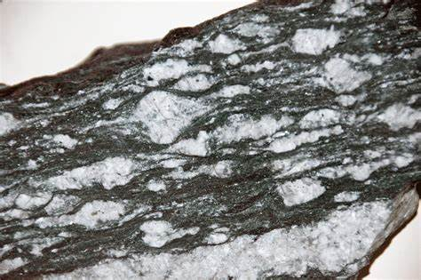
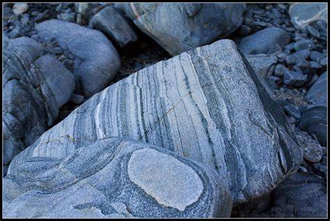
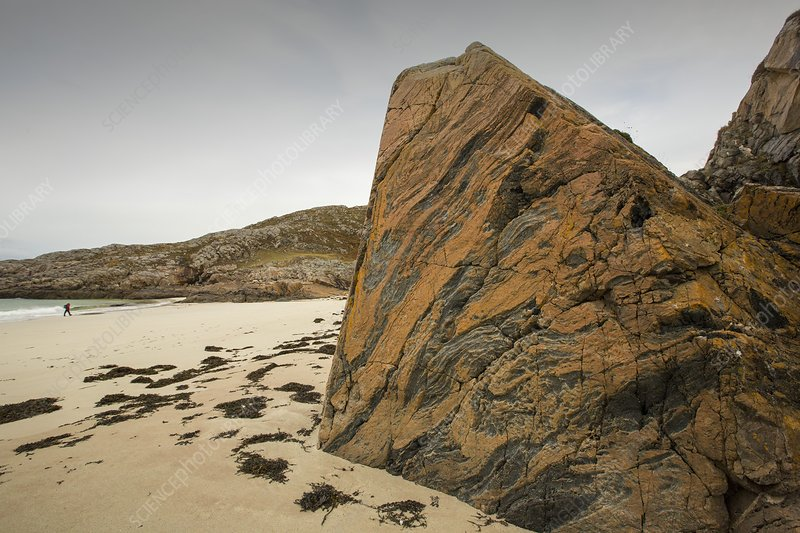
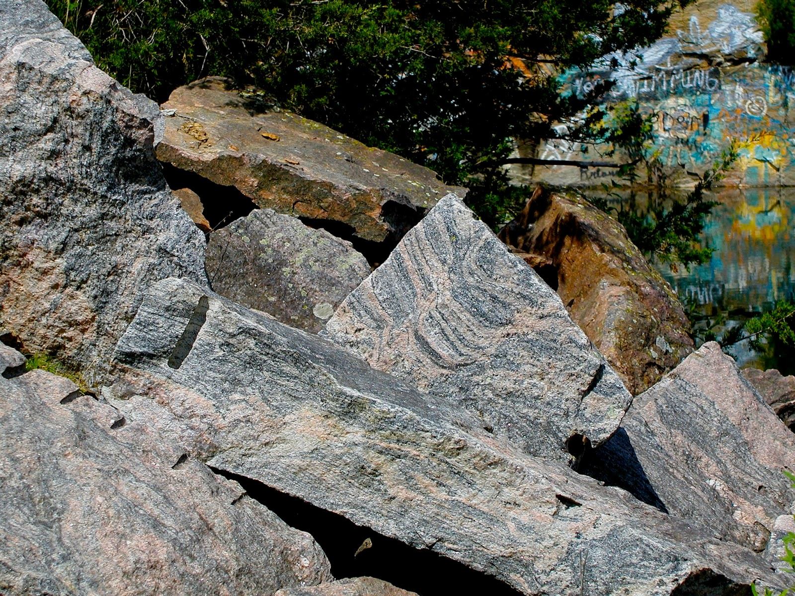

Gneiss: The Banded Metamorphic Rock

Chemical Formula: Variable (Silicates, Feldspar, Quartz, Biotite, Garnet, Amphibole)
Color: Varies; typically banded in shades of gray, white, pink, black, and brown
Hardness: 6-7 on the Mohs scale
Crystal System: Various, typically exhibiting a foliated or banded structure
Localities: United States, Canada, Brazil, Norway, India, South Africa
Common Uses: Construction, Decorative Stone, Flooring, Countertops, Road Aggregate
Introduction to Gneiss
Gneiss is a high-grade metamorphic rock characterized by its distinctive banding and foliated structure, formed from the recrystallization of pre-existing rocks such as granite or sedimentary rocks like shale. Under intense heat and pressure, these precursor rocks undergo profound metamorphism, causing the minerals to segregate into layers, resulting in the characteristic "gneissic" banding.
Gneiss is often visually striking due to its alternating light and dark mineral bands, which gives it a layered appearance. It can be found in a wide variety of colors including gray, white, pink, and black, depending on its mineral composition. Its durability and aesthetic appeal make it a popular choice for both structural and decorative purposes in construction.
Formation and Types of Gneiss
Gneiss forms under extreme conditions of high temperature and pressure, typically during regional metamorphism in mountain-building events. This rock can develop from the metamorphism of various rock types, including igneous rocks like granite or sedimentary rocks like sandstone or shale. As the rock undergoes metamorphism, minerals segregate into alternating layers of light and dark minerals, creating the signature banding.
Key Types of Gneiss:
1. Orthogneiss

Orthogneiss is formed from the metamorphism of igneous rocks, particularly granite. It contains feldspar and quartz, giving it a light color, often with bands of biotite or amphibole. Orthogneiss is generally lighter in color and exhibits a granitic texture.
2. Paragneiss

Paragneiss is derived from the metamorphism of sedimentary rocks such as shale or sandstone. This variety tends to have a more varied mineral composition than orthogneiss, reflecting the original sedimentary composition.
3. Augen Gneiss
Augen gneiss features large eye-shaped mineral grains (called "augen," German for "eyes") typically of feldspar within the finer matrix of the rock. This distinctive texture results from the deformation of the original rock during metamorphism, causing the feldspar to recrystallize into large oval grains.
4. Banded Gneiss
The most typical form, banded gneiss displays alternating bands of dark and light minerals. The light bands are usually composed of quartz and feldspar, while the darker bands contain mica, biotite, and amphibole. This texture results from the segregation of minerals during the metamorphic process.
Structure and Properties of Gneiss
Gneiss is known for its unique physical and mineralogical properties, which make it distinguishable from other metamorphic rocks.
- Foliation: Gneiss exhibits a foliated texture, but unlike schist, its foliation is more coarse and often manifests as distinct bands of light and dark minerals.
- Hardness: With a hardness of 6-7 on the Mohs scale, gneiss is a hard and durable rock suitable for construction and outdoor applications.
- Composition: Gneiss contains a variety of silicate minerals, primarily quartz and feldspar, which form the light bands, while biotite, amphibole, and garnet are found in the darker bands.
- Banded Structure: The most characteristic feature of gneiss is its banded appearance. The bands are formed by the segregation of different mineral types during high-grade metamorphism. This banding can range from subtle to highly pronounced.
- Durability: Gneiss is extremely durable, resistant to weathering and erosion, making it ideal for use in outdoor and high-traffic areas.
Uses of Gneiss
Gneiss is used extensively in construction, design, and infrastructure projects due to its strength, durability, and unique appearance.
1. Construction
Gneiss is a popular building material, particularly for large-scale construction projects like bridges, dams, and monuments. Its toughness and resistance to weathering make it an excellent choice for structural applications. It is also used as crushed stone or aggregate in road building.
2. Decorative Stone
Gneiss is valued as a decorative stone due to its striking banding and color variations. It is used for countertops, flooring, wall cladding, and paving. Polished gneiss is often installed in high-end homes and commercial properties where its beauty and durability are highly appreciated.
3. Flooring and Cladding
The banded texture and wide variety of colors make gneiss an attractive material for flooring and wall cladding. Its durability means it can withstand heavy foot traffic, making it a popular choice for both indoor and outdoor use. It is also frequently used in public buildings and urban spaces for paving and decorative walls.
4. Countertops
Gneiss is a popular alternative to granite and quartzite for kitchen countertops due to its unique appearance and resilience. It can resist heat and scratching, though it must be sealed to protect against staining, similar to other natural stones.
5. Road Aggregate
Crushed gneiss is widely used as road aggregate, providing a durable and stable base for roadways and railroads. Its hardness and resistance to weathering make it an ideal choice for infrastructure projects that require long-lasting materials.
History of Gneiss
Gneiss has been used by human civilizations for millennia due to its abundance and durability. Its use spans both ancient and modern times, appearing in construction, monuments, and even art.
Ancient Civilizations
Many ancient cultures used gneiss as a building material for temples, statues, and tools. The Pyramids of Egypt, for example, contain blocks of gneiss. Additionally, ancient tools such as axes and hammerstones were often made from gneiss due to its hardness and availability.
Modern Architecture and Design
In more recent times, gneiss has been prized for its aesthetic appeal and strength in modern architecture. Its banded structure gives it a unique, sophisticated look when used in cladding, facades, and flooring. Gneiss is commonly used in contemporary building projects around the world, both for structural purposes and for decorative elements.
Famous Varieties of Gneiss
Several famous types of gneiss are recognized for their distinct appearance or regional importance.
1. Lewisian Gneiss
One of the oldest rocks on Earth, Lewisian gneiss is found in northwest Scotland and is estimated to be about 3 billion years old. It is known for its ancient weathered appearance and is a key component of the Outer Hebrides landscape.
2. Morton Gneiss
Morton gneiss from Minnesota, USA, is a particularly striking variety known for its swirling patterns of pink, black, and gray. It is often used as a decorative stone in buildings and monuments across the United States.
3. Augen Gneiss
As mentioned earlier, augen gneiss is recognized by its large eye-shaped mineral grains, which give it a distinctive appearance. This type is found in regions that have undergone significant tectonic deformation.
Quarrying and Sourcing of Gneiss
Gneiss is quarried from various locations around the world, with large deposits found in mountainous regions where high-grade metamorphism has occurred. The rock is extracted in large blocks that are then cut and shaped for construction, cladding, and decorative purposes.
Notable Quarry Locations:
- Scotland: The Lewisian gneiss of the Scottish Highlands is one of the oldest and most famous varieties, used in both historic and modern buildings.
- Norway: Norway is home to several gneiss quarries, producing stones that are used domestically and internationally.
- United States: The Morton gneiss quarries in Minnesota supply a highly prized stone for decorative and construction purposes.
Extraction Process
The extraction of gneiss typically involves blasting and cutting large blocks from quarries using diamond wire saws or explosives. Once extracted, the stone is processed into slabs, tiles, or crushed aggregate depending on its intended use.
Enhancement of Gneiss
While gneiss is naturally durable and beautiful, several treatments are applied to enhance its appearance and durability:
- Polishing: Polishing brings out the rich color and banding in gneiss, creating a smooth, glossy finish that is ideal for countertops, flooring, and decorative uses.
- Sealing: Like many natural stones, gneiss is sealed to protect against moisture and staining, particularly when used for countertops or flooring in high-traffic areas.
- Resin Treatment: Minor imperfections and cracks in gneiss can be filled with resin, improving both the durability and appearance of the stone.
Caring for Gneiss
Gneiss is a low-maintenance material, but it does require some care to maintain its beauty and functionality:
- Cleaning: Clean gneiss surfaces with a mild pH-neutral cleaner and a soft cloth. Avoid acidic or abrasive cleaners, which can damage the polished surface.
- Sealing: Gneiss used for countertops or flooring should be sealed periodically to prevent stains and moisture absorption.
- Polishing: If the polished surface becomes dull over time, professional polishing can restore its luster.
Environmental Considerations
The quarrying of gneiss, like all natural stone, has environmental impacts that must be managed. Sustainable quarrying practices aim to reduce waste, minimize the environmental footprint, and restore quarried landscapes. Efforts are also made to recycle gneiss offcuts and byproducts for use in construction aggregate, minimizing the waste produced during quarrying.